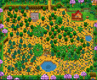
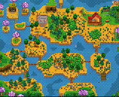
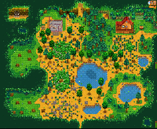
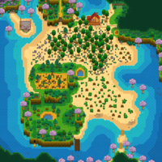
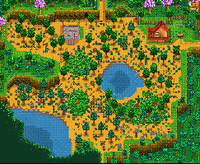

Stadew Valley
sobre:
Stardew Valley é um RPG sem fim da vida no campo! Você herdou a antiga fazenda de seu avô no Vale do Orvalho. Equipado com ferramentas de segunda mão e algumas moedas, você irá começar sua nova vida. Será que você consegue aprender a viver da terra e transformar esses campos absurdamente vegetados em uma casa próspera? Não vai ser fácil. Desde que Corporação Joja veio à cidade, os antigos modos de vida quase desapareceram. O Centro Comunitário, uma vez o lugar mais visitado da cidade, agora está em ruínas. Mas o vale parece cheio de oportunidades. Com um pouco de dedicação, você pode ser a pessoa que restaurará a grandeza do Vale do Orvalho!
.
.
informações:
| Ano de lançamento | Genero | Plataformas |
|---|---|---|
| 26 de fevereiro de 2016 | Simulação | Xbox One |
| RPG | Computador | |
| Single Player | PlayStation 4 | |
| Multiplayer | Nintendo Switch |
Personagens:
Krobus:

Krobus é o único monstro amigável que os jogadores vão encontrar. Ele é um Bruto das sombras que vive no esgoto, porque ele é muito sensível à luz do sol para sair durante o dia. Ele vende uma variedade de bens raros. Ele também está disponível como colega de quarto.
.
.
Anão:

O Anão é um aldeão da vila que mora nas minas. Inicialmente o caminho é bloqueado por uma rocha inquebrável, logo dentro da entrada. Depois de atualizar para uma picareta de aço, a pedra pode ser quebrada. Uma Bombinha também funciona.
.
.
Maru:

Maru é uma das aldeãs que moram na Montanha e uma dos doze personagens disponíveis para casar.
Ela mora no norte da cidade com sua família em uma casa anexada a carpintaria da Robin.
No menu Social (de Amizades), a roupa da Maru vai mudar para um uniforme de enfermeira quando ela estiver trabalhando na Clínica do Harvey
.
.
Feiticeiro:

O Feiticeiro, também conhecido como M. Rasmodeu, é um aldeão que mora na Torre do mago no extremo oeste da Floresta Cinzaseiva. O feiticeiro não sai da Torre do mago (exceto para festivais), e pode ser encontrado lá quando a torre é acessível (6:00 às 23:00 ou, qualquer Horário, se tiver a Chave da Vila)
.
.
.
Robin:

Robin é um dos aldeões de Stardew Valley. Ela mora em Rua da Montanha, nº 24, na Montanha, com seu marido Demetrius, filha Maru, e filho Sebastian. Robin é casada com Demetrius e mora com sua filha Maru e filho Sebastian. Maru é sua filha com Demetrius, e Sebastian é de outro relacionamento anterior. Supõe-se que Demetrius é o segundo marido de Robin.
.
.
Locais:
| nome | mapa | descrição |
|---|---|---|
 Fazenda Padrão Fazenda Padrão |
 | A maioria deste mapa é terra de Cultivo, ideal para Lavouras e Animais. |
 Fazenda entre Riachos Fazenda entre Riachos |
 | A maioria deste mapa é água. A Pesca é viável nesta fazenda. |
 Fazenda na Floresta Fazenda na Floresta |
 | Muitas Árvores são encontradas em todo o mapa. |
 Fazenda na Praia Fazenda na Praia |
 | Boas coletas e pesca, muito espaço aberto. Algumas vezes caixas de suprimentos aparecem na areia. |
 Fazenda Remota Fazenda Remota |
 | Monstros aparecem à noite (escalas com nível de Combate do jogador). Golem selvagem é exclusivo deste mapa. |
inimigos:

gosma
Gosmas são inimigos que podem ser encontrados em vários locais. Eles vêm em cinco variações diferentes, todas baseadas no mesmo sprite e código
golem Selvagem
Golens Selvagens são únicos inimigos encontrados nas fazendas à noite, se o jogador selecionar a Fazenda Remota como seu layout de fazenda.

Caveira Assombrada
Caveira Assombrada é um inimigo voador encontrado na Mina da pedreira e nos andares de masmorra das minas.